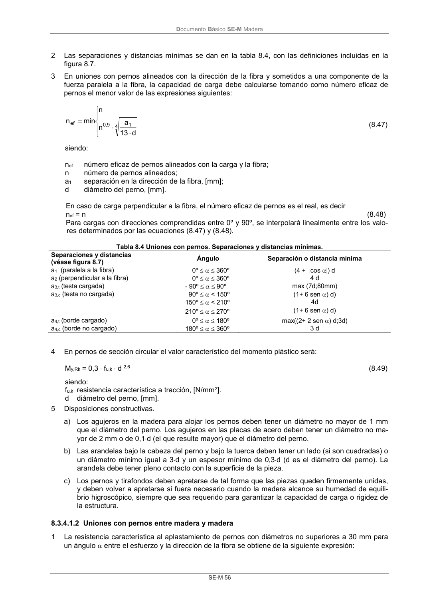
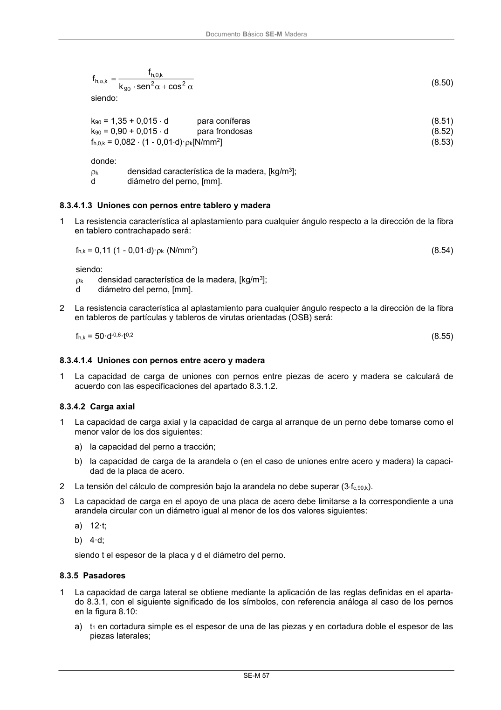

DB-SE-M · 8.3.4.1.2 Uniones con pernos entre madera y madera · versión 2019-12-20 · capa oficial
Formatos: JSON compacto · Markdown · PDF fuente
Ámbito del documento · texto del ámbito · documento y tablas
ID técnico a0121 · PDF pág. 62-63 · jerarquía no validada por persona · contrastado con el literal de la página 62 (candidato tipográfico); no validado por persona · padre: raíz
8.3.4.1.2 Uniones con pernos entre madera y madera 1 La resistencia característica al aplastamiento de pernos con diámetros no superiores a 30 mm para un ángulo entre el esfuerzo y la dirección de la fibra se obtiene de la siguiente expresión: DocumentoBásico SE-M Madera SE-M 57 2 2 90 k, 0 ,h k, ,h cos sen k f f (8.50) siendo: k90 = 1,35 + 0,015 d para coníferas (8.51) k90 = 0,90 + 0,015 d para frondosas (8.52) fh,0,k = 0,082 (1 - 0,01d)·k[N/mm2] (8.53) donde: k densidad característica de la madera, [kg/m3]; d diámetro del perno, [mm].


PDF fuente redistribuible: copia fiel enlazada en esta página (SHA256 verificado).